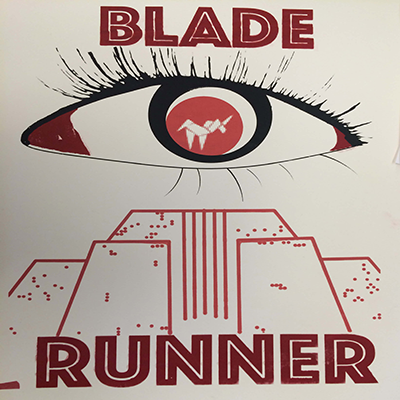
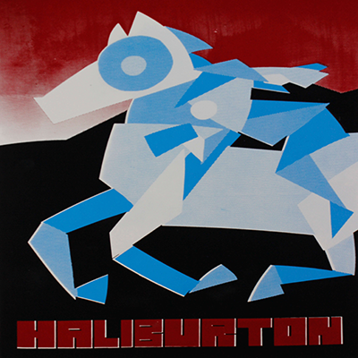
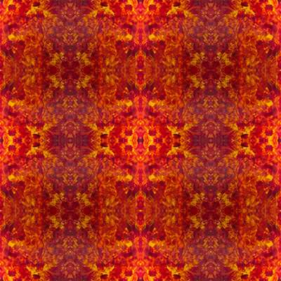

Portfolio
These are a few projects I have completed in another course I took at the beginning of 2016. I have included them here for anyone who may be interested in viewing them. All of these helped me to understand the artistic world a little better. I still have the physical as well as the digital files on my Macbook.
  